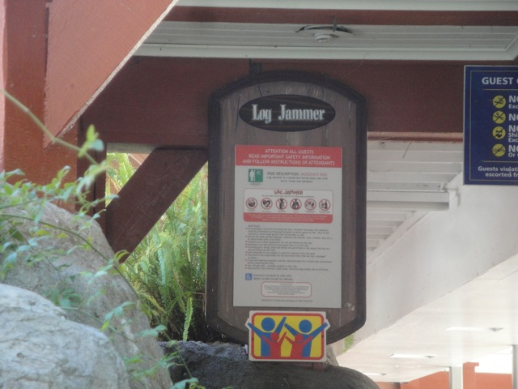
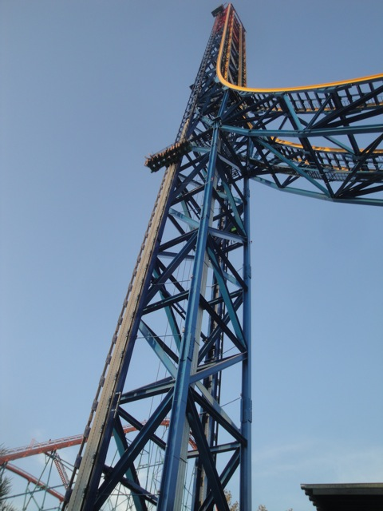
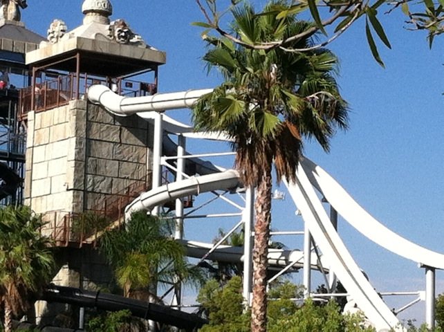
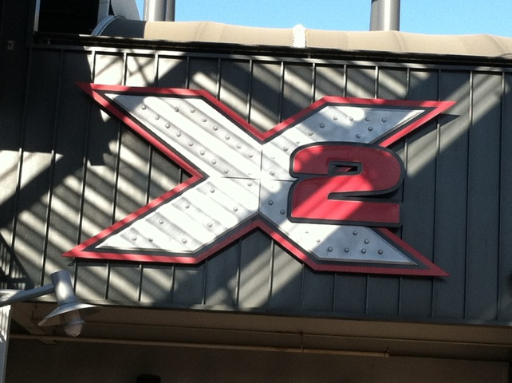

Six Flags Magic Mountain Summer 2012
All right. Its time for our yearly Six Flags Magic Mtn Summer Update. And as always, we took a ton of tiny little microscopic visits and strung these along with several experiences of us working at Six Flags Magic Mtn into one big summer update. Anyways, here we are waiting in line for Goliath.
Ok, this may be more appropriate for our mental age.
Come on!!! You know you wanna ride the Roller Skater with us!!!!
Ugh. So sad to see the Log Jammer grave just sitting being a huge eyesore.

Looks like someone forgot to take down the sign. =)
All right. For lunch this day, we decided to go to Chick Fil A for lunch. Now, coincidentally, this was the exact same day their President Dan Cathy came out and basically said "Yeah. I'm a homophobe and believe gay people should go f*ck themselves." So later that night, I got about 20 emails about the scandal and how horrible Chick Fil A is. And for months, this Chick Fil A scandal kept going on with everybody giving their two cents. Now I've said before that I really liked Chick Fil A. Well, for me at least, Chick Fil A is the Ted Nugent for fast food. Much as how I really like Ted Nugent's music, but DESPISE Ted Nugent himself. Its pretty much the same way here. I really like Chick Fil A's food, but DESPISE the company itself. Now everyones going off about Chick Fil A, and most of it is just the same old debate, but there are a couple things people on the opposition are saying that just f*cking drive me insane. So get comfortable, because I'm going to be talking about this for a while. First off, I can't stand these people whining about how we're trampling on Chick Fil A's First Amendment rights. You may agree with Chick Fil A and be homophobes as well, but if you believe we're stepping on Chick Fil A's First Amendment Rights, you're not only hateful, but a hateful idiot if you believe we're trampling on Chick Fil A's First Amendment rights. If you're so stupid as to believe this, sit down cause I'm gonna give you dipsh*ts a little Government lesson and hopefully by the end of my lesson, you'll have learned so much that you gained a second digit to your microscopic IQ. Let me quote the First Amendment so you'll know just what the hell it is. "Congress shall make no law respecting an establishment of religion, or prohibiting the free exercise thereof; or abridging the freedom of speech, or of the press; or the right of the people peaceably to assemble, and to petition the Government for a redress of grievances." Now these idiots will use this and go "SEE!!! THE 1st AMENDMENT ALLOWS CHICK FIL A TO SAY THIS!!!! SO STOP PICKING ON THEM!!!!!!" And they're right. Chick Fil A does have the right to say this and it is protected under the First Amendment of the Constitution. The First Amendment along with giving freedom of religion (Yes, we have that!!! Stop pretending we're a Christian Theocracy you psyhco fundamentalists!!!) and the freedom of the Press, we have the right to pretty much say whatever we want to, even if it is insulting and horrible to the powerful people in our government, which is something that dictatorships like North Korea can't tolerate. For example, I can tell Governer and *cringes with disgust* Presidental Nominee Mitt Romeny to go f*ck himself and there's nothing that the government can do to stop me because my speech is protected under the First Amendment of the Constituton. And BTW, I'm not just using that as an example, I really mean it. You're a disgusting despicable crook Mitt Romney. Go f*ck yoursel...Actually, on second thought, go f*ck your Dressage Horse. Anyways, back to Chick Fil A and the First Amendment. While the First Amendment does allow Chick Fil A to say this stuff, and may I point out that there are no criminal charges being brought out by the government because their speech is protected under the First Amendment. However, the First Amendment does not give you freedom from consequences of your speech, which is something these morons can't wrap their lizard brains around. Thats right. There are consequences for your speech and experiencing them is not violating your First Amendment rights. So when Chick Fil A faces all these boycotts and criticism from the Gay Community for being homophobic, they are not trampling on your First Amendment Rights. If anything, they're just exercising theirs by bashing and calling out your company and sending all those Anti-Chick Fil A messages. So anyone who still says that we're violating Chick Fil A's First Amendment rights, please shut the f*ck up until you grow some brain cells. It's actually quite astonishing just how many people fail to understand this very basic concept about speech having consequences. Anyways, the second thing that drives me crazy about people defending Chick Fil A would be all the people saying the following. "I'm so proud of Chick Fil A. They are so brave for standing up for themselves and showing their true idenity." I'm just gonna come out and say it. Discriminating against a big part of the population and admiting that you spend a good chunk of money donating to organizations that take away their rights is not brave. Its downright stupid because now you just excluded yourself from a big chunk of the population as now pretty much everyone supporting Gay Rights is avoiding your resteraunt. You see Chick Fil A, there's a reason other Fast Food Chains like McDonalds don't make statements like this. Because they want as much people to buy their food and they know that saying that I don't support an entire group to have equal rights is gonna lose them a lot of money. And as coorporations, the whole point of them is to just make money (which makes them NOT people!!!!). So doing a move like this by the very nature of a coorporation is not brave, but down right idiotic. For example, I really like the food at Chick Fil A and would totally eat there frequently if it weren't for the fact that my money would be funneled from Chick Fil A to organizations that are working to take away equal rights. But I don't want my money to go there, so I'm trying to stop eating there. I may get a random craving where I want a Chicken Sandwhich with their freaking amazing sauce and I want it NOW!!!!! So I may get something out of weakness to good tasting food, but I try to avoid places where I feel guilty about eating there afterwards. So yeah, lost profits isn't brave. Its just down right stupid.
Yeah. Going around in a Cow Suit sounds like fun. =)
Speaking of food, lets check out the newest food place at Six Flags Magic Mountain. What the Fried.
I must admit, Six Flags Magic Mtn is really improving in the food department and this is a perfect example. This place not only serves lots of deep fried stuff...
But they also have Dole Whips here!!!! Thats right!!! I don't have to go to Disneyland to get one!!!!!! =)
I finally managed to get a Souviner Bottle not only cause of the free refills, but those $1.00 refills save me money as they're cheaper than the employee prices at Oasis.
But screw their new food options. The real highlight of the summer is without a doubt, the addition of Lex Luthor.
First off, the restraints on this thing are great. They're really the first restraints out their where I really don't know if they're a lap bar or an OTSR. They come over like an OTSR, but unless you're a total fatass, you can easily slip out and have the freedom of a lap bar.
Yeah. The tallest drop tower in the world may be pretty good alone...

But when you ride it in the crazy position, it is F*CKING AMAZING!!!! To ride it in the crazy position, just lean out, look straight down, and close your eyes. It makes the drop freaking intense!!!! =) (Just make sure you're sitting on your seatbelt flap or else it'll smack you in the face).
"Why yes. I would like a free Freestyle Coke please." =)
Meh. They're selling Voodoo Dolls in Studio 6F.
What the hell is wrong with you people!!!! It is so obviously a toy!!!! And I'd really love to see these so-called magical powers. Come on. Prove your claim. F*cking wow me with your magical powers.
Well that was a fun day at Six Flags Magic Mountain.
Aww. I'm getting really sad just seeing the Log Jammer Boats rot here near ESO 2. =(
Hey, if Log Jammer is making you feel nostalgic, then this should bring back Flashbacks of Flashback. =)
Check out my cool new Squid Hat.
They had a special employee only party for Lex Luthor, which gave us lots and lots of rides on it.
Dude!!! We've been marathoning this thing all morning!!!
And what would an employee party be without more free pancakes.
DAMMIT GERTRUDE AND GEOFFREY SONIC!!! WHY DIDN'T YOU TWO USE THOSE CONDOMS I GAVE YOU FOR CHRISTMAS!!!! *ugh* Now look what we've got.
 To do something different, we decided to watch a movie in the Sky Tower. So we grabbed Cody's old portable DVD player and watched Kiki's Delivery Service. It was interesting as we saw the movie while going up and down the elevator. And its a great Miyazaki Movie. Defiently check it out. =)
To do something different, we decided to watch a movie in the Sky Tower. So we grabbed Cody's old portable DVD player and watched Kiki's Delivery Service. It was interesting as we saw the movie while going up and down the elevator. And its a great Miyazaki Movie. Defiently check it out. =)
Scream is one of those rides we got a ton of rides on this summer due to it being close to where we clock in and never having a line.
Yes world. I really get paid to just pretend that I'm Spiderman.
Ooh. Lex Luthor at sunset!!! I'm keeping my eyes open for this one. The view is too good.
Ooh. A random seatbelt in the dirt. That can't be good for Rapids.
Yeah. This was a BAD week for Roaring Rapids. And I mean a BAD WEEK!!!!! First, we were closed for two days because we had to completely replace all of our water since it was too dirty (I'm really hoping Alien Encounter @ Movie Park Germany is next for this). Then after that, we just kept closing for various different reasons. So many things happened that I forgot all of them, oh wait, I think it was a god damn guide board that kept breaking. Well, we would be closed for 6 hours, open at like 3:00, then break down at 4:30, and be closed for the rest of the day until we get it fixed again just so it could break down the next hour and the cycle continues. And this happened for at least a week.
All right. Before our next visit to Six Flags Magic Mtn/day of work, we were on a mission. Get Peace Tea and find a damn store open on Sundays after asking "ARE YOU GUYS OPEN ON THURSDAYS!!!!!!?"
HELL YES!!!! THIS THING IS AMAZING!!!! Allows instant access on Lex Luthor.
"LEX LUTHOR IS EXTREME JUST LIKE MY BALLS OF STEEL!!!!!"
Hey everyone!!! Check out our new friend!!!!
Ok. Those are way too horrifying crowds. Time to go till I leave for work.
Yes. I got the Apple Pie Soda at Rocket Fizz. And yes, I liked it.
Still wondering when they're going to put in that god damn Slingshot.
All right. Trying out the Pro Level of the Rock Climbing Wall.
Ah!!!! So close!!! (Nice shot of my ass BTW).
Check me out and my pink cape!!! =)
People are so stupid they don't even notice the row with nobody in it because they just herd together like sheeple. God I love taking advantage of idiots.
Green Lantern is still sucking and not flipping as usual.
Hey, with it being a great drop tower and getting on insantly via single riders line, I can't help but to ride this thing all the time.
Every time we drove by that tire, we felt like it was going to blow us up.
Hey Andrew!!! You're afraid of spiders!!! Well look what I found!!! =)
Doing some work on Percy. Oh wait, I just remembered that that ride existed.
This stuff is f*cking nasty. It was literally just sitting on that tree stump ever since I worked at Six Flags Magic Mtn and from what I heard, it was here for years before I came along. Well after a year of just staring at what appeared to be dried up puke on this tree stump, I had enough and had to clean it off. Hey, it took me over a week of slowly getting underneath and chipping away at what appeared to be left over glue from Tatsu's construction, but I finally got rid of that nasty sh*t.
Ooh!!!! They have Strawberry Dole Whips!!! *drool*
 Here you can see the water flowing into Roaring Rapids after we turn on Main Pumps.
Here you can see the water flowing into Roaring Rapids after we turn on Main Pumps.
Yo. Check out my badass self in my big foam purple hat.
Ooh. Check out the pretty sunset. (Why don't more people notice these things?)
Judging by Ninja's line, I'd say this was a very good day to go to Six Flags Magic Mountain.
Hey!!! I found $2.00 just lying on the ground!!!! Today must be my lucky day. =)
 Yep. I took another ride on Lex Luthor.
Yep. I took another ride on Lex Luthor.
Did people seriously gum up Lex Luthor already!!!? I f*cking DESPISE the General Public (By General Public, I don't mean non-coaster enthusiasts, I mean spoiled loser wanna-be hipsters who think this sh*t is funny). Between this, all the gum supports, and that gum tree at Roaring Rapids that after we completely cleaned off, a week later in just one day, was worse than before we cleaned it, I really want to see Singaporean Style Gum Rules at Six Flags Magic Mountain where its just flat out banned. If you're caught chewing gum, you're kicked out of the park without a refund. No exceptions. Yeah, I know it sucks, but you losers have clearly shown that you are too irresponsible and lame to be trusted with gum.
All right. Time for our Six Flags Hurricane Harbor visit of the year.
 We have WAY too much fun in this bucket area.
We have WAY too much fun in this bucket area.

These slides are still freaking awesome, though Venom Drop is still the star attraction of the water park.
 New at Six Flags Hurricane Harbor this year would be Flash Pass. Totally unnesecarry today since there were no lines at all today. But I do support Flash Pass wherever it pops up.
New at Six Flags Hurricane Harbor this year would be Flash Pass. Totally unnesecarry today since there were no lines at all today. But I do support Flash Pass wherever it pops up.
Sweet!!! No line for X2 today!!!!

I really should've gotten more rides on this thing this summer.
And to top it off, we went to another Employee Wave Pool Party where they showed Sherlock Holmes in the Wave Pool, though we never really saw the movie. We just had a blast playing in the wavepool.
Dammit!!! Stop trying to grab my balls!!!!
Home